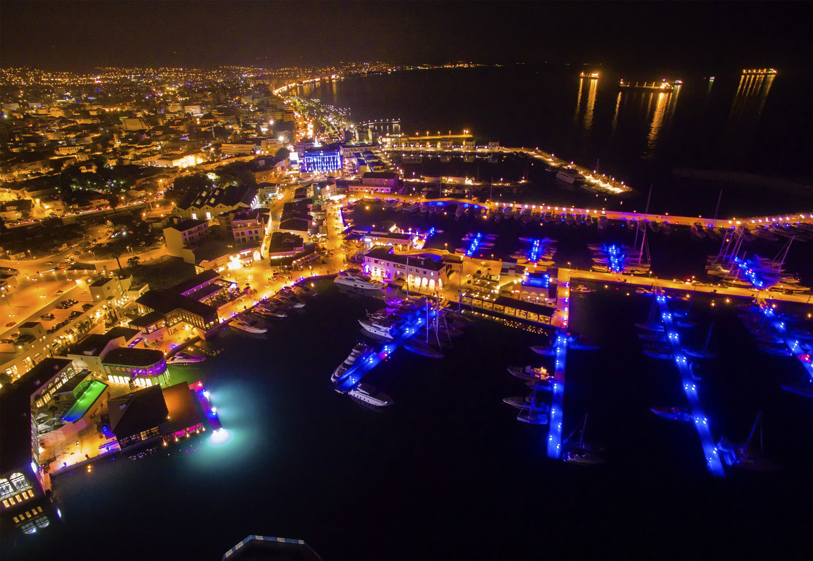
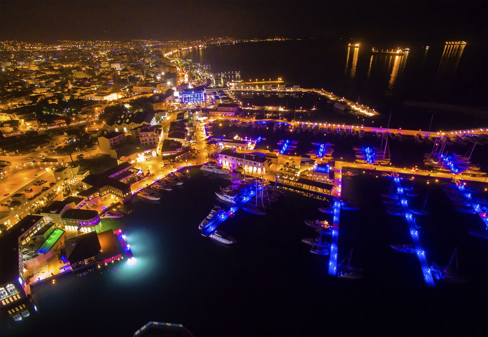

There are myriad islands in the Mediterranean, but only one does Aphrodite, the ancient Greek goddess of love, call home, and that's Cyprus.
Whatever your pace or special interest, Cyprus is uniquely poised to welcome you. Our beaches are not only beautiful; they are certified as among the cleanest in Europe.
And, just a short drive from the crystal clear waters of our coast are the pine-clad Troodos Mountains, where wild moufflons roam and cedars grow, and gem-like churches and monasteries are replete with unmatched Byzantine frescoes and icons. Ten of the finest examples are designated by UNESCO as World Heritage sites
Cyprus is a haven for archaeology lovers. From Neolithic settlements more than 10,000 years old, to spectacular Greco-Roman ruins, such as the ancient seaside amphitheater of Kourion, to Crusader fortresses such as Kolossi, the list of treasures is boundless. By no means will you want to miss Pafos, a wellspring of antiquities in the west, including the mysterious Tombs of the Kings and Roman mosaics that are so colourful, extensive and well-preserved, they are recognized by UNESCO.
Although Cyprus is the third largest island in the Mediterranean, it is surprisingly compact and easy to explore. In between rugged mountain peaks and the shimmering coast you'll traverse untrammelled landscapes and rolling hills with vineyards that still produce the world's oldest named dessert wine, sweet Commandaria. Linger in idyllic villages such as Omodos and Lefkara where the rhythm slows down and there's always time for another coffee. All across Cyprus, you'll have the opportunity to experience a distinctive cuisine composed of meze, small plates of everything from flame-grilled, delicately spiced meats to fresh vegetables and amazing cheeses, such as the famous halloumi (the savory sheep's cheese that grills).
With its rich past as anchor, Cyprus is also a thriving modern nation with a service economy second to none in the whole region, and the Cypriot people, worldly and warm, are only too happy to share it with you. Which means among other things, an attractive range of accommodations, luxurious hotels with both local flavour and the highest international standards, quality tourist villas, agrotourism options and more.
Cyprus location, coveted by empires since ancient times, is still ideal today for visiting nearby countries, such as Greece, Israel and Egypt. But with so much history to see and culture to enjoy and cuisine to savor and with Aphrodite as your guide you will have more reasons to stay and explore Cyprus than you might think.
2. Exploring Limassol:
The island's second largest city, Lemesos (Limassol) spreads out between two ancient city-kingdoms, Amathous to the east and Kourion to the west, two of the most spectacular archaeological sites in Cyprus. It is the island's main port, the centre of the wine industry and a bustling holiday resort. A large number of hotels and hotel apartments line a 15 km coastline interspersed with eucalyptus groves and linked by a promenade popular with walkers or joggers.
Wander round the narrow streets of the old town radiating out from the fishing harbour. The medieval castle was the site of the royal wedding in the Middle Ages between Richard the Lionheart and Berengaria of Navarre, and now houses the Cyprus Medieval Museum. Browse through the array of goods and produce in the atmospheric Market.
The town's inhabitants are renowned for their love of fun so not surprisingly the nightlife is varied, with all sorts of tavernas, discos and clubs. Enjoy a summer concert under the stars in the Greco-Roman theatre of Kourion, or join in the Bacchian excesses at the Wine Festival in September, or have fun at the Carnival with its fancy dress chariot parade and parties.
A short drive out into the surrounding countryside will take you through vineyards and quaint wine producing villages. The castle of Kolossi is where the sweet dessert wine "Commandaria", the world's oldest named wine, was produced by the Knights of St John of Jerusalem who had their headquarters here in the Middle Ages.
Germasogeia dam and Akrotiri salt lake, at the edge of which is the Monastery of St Nicholas of the Cats, are unique wetlands ideal for observing nature and wildlife and peaceful places to relax, go for a walk or indulge in some angling or bird watching.


 
